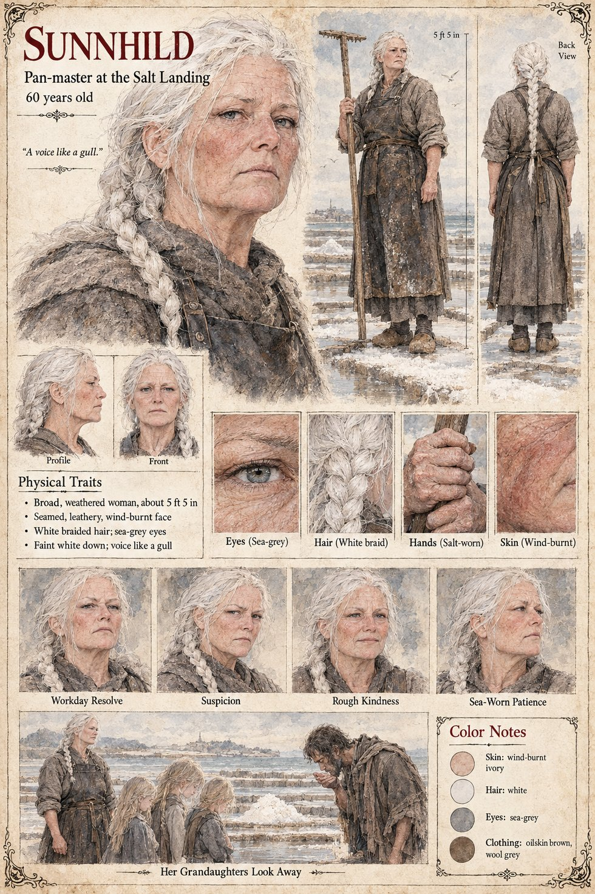

Sunnhild
Pan-master at the Salt Landing · 60 years old by her sheet
The pan-master of the Salt Landing, the river-mouth hamlet where, in the third week of Lorren, Wido's page has Hagen Brandt put his mark to the Duke of Tarnwald's contract, and which the Gazetteer describes as thirty huts and a hundred salt-pans. She is sixty, broad and weathered, with a seamed, wind-burnt face, a long white braid, sea-grey eyes, a faint white down, a long-handled salt-rake and a voice like a gull. The scene on her sheet is captioned Her Granddaughters Look Away: it draws her standing with three fair girls beside a white heap of salt, and a ragged man bent over the heap with his hands raised to his mouth. The publication notes name him: it is Tomobe no Higaide, whom she employs on the salt-pans and pays in salt (Chapter 7), and whom she takes for a saint because he does not drink; the granddaughters learn to look away from a tragic man tasting brine.
Her expression panels run Workday Resolve, Suspicion, Rough Kindness and Sea-Worn Patience. Her pull-quote, A voice like a gull, is the sheet's own line. Written from the sheet, from what the other Case 4181 pages already say, and from the character notes in the case's publication-prep file; the manuscript itself was not to hand. Her age of 60, her build of about 5 ft 5 in, oilskin-brown apron over grey wool and wooden clogs are the sheet's own.
“A voice like a gull.”